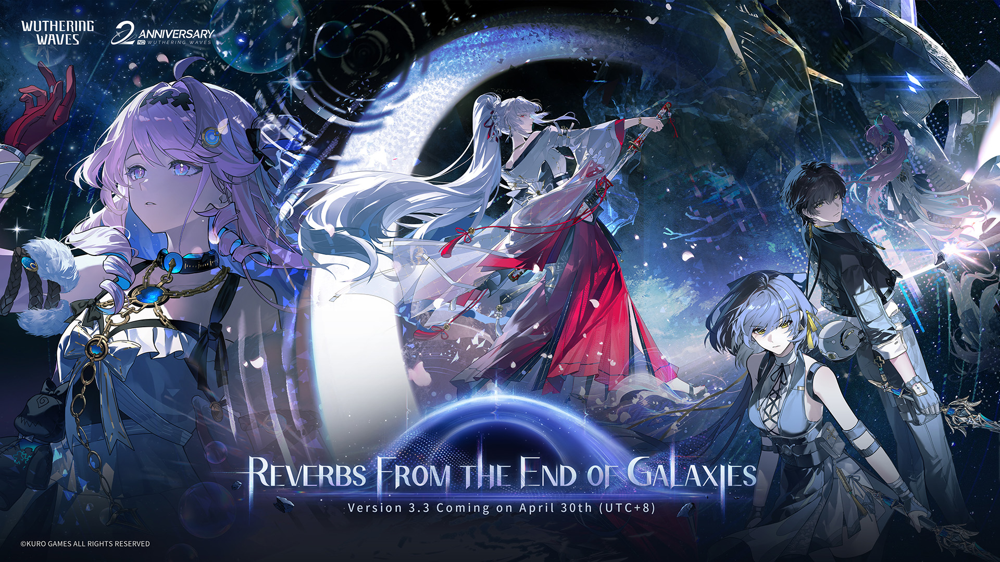

Game Information

- Title: Wuthering Waves
- Developer: KURO GAMES
- Genre: Open-world action RPG, adventure, free-to-play gacha game
- Target User: Teen and young adult players who enjoy anime-style action games. Suitable for all genders.
- Platform: PC, mobile, PlayStation 5, and other supported platforms
Brief Description
Wuthering Waves follows Rover, a character who wakes up in the world of Solaris-3 with lost memories. The player explores a post-apocalyptic world, meets Resonators, fights enemies using fast action combat, collects Echoes, and progresses through story quests and character events.
Game Characters
Rover
Awakened with an unknown past by a mysterious entity, Rover is an amnesiac Arbiter from another world who embarks on a journey to uncover the truth to regain their lost memories. As secrets are unveiled, they establish deeper connections with the Solaris-3 and its nations.
Carlotta Montelli
Carlotta (My self-proclaimed wife), the second daughter of the esteemed Montelli family, embodies innate nobility and a refined appreciation for art. Her elegance is matched by her unconventional spirit, unshackled by tradition. To ensure her family's future, she alternates between dual roles, addressing delicate "troubles" behind the scenes.
Zani
Zani (My self-proclaimed overworking wife), a serious and reliable Montelli employee, follows a strict routine and manages tasks with ease. For years, she has clocked in on time without fail, finding as much enjoyment in her well-ordered life as in her carefully planned moments of leisure.
Brant
As captain of the Fool's Troupe, Brant exudes a carefree, easygoing charm, unbound by convention. Beneath his flamboyant persona lies a genuine heart, deeply devoted to his family and companions. His life is dedicated to securing a safe haven for the Troupe's members
Interface and Gameplay
Game Interface
The interface includes a character health bar, skill icons, map, quest markers, party setup, inventory, and combat buttons. It is designed to support both exploration and fast real-time battles.
Related Information
The game uses a gacha system for character collection, an Echo system for equipment and combat utility, and open-world traversal such as climbing, gliding, and fast movement.